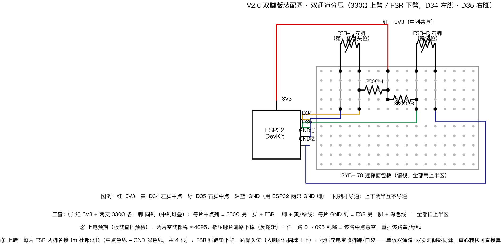

V2.6 双脚版装配图 · 双通道分压（330Ω 上臂 / FSR 下臂，D34 左脚 · D35 右脚）

图例：红=3V3 黄=D34 左脚中点 绿=D35 右脚中点 深蓝=GND（用 ESP32 两只 GND 脚）
三查（插完先别上电，照图核一遍）
① 同列才导通：红 3V3 + 两支 330Ω 各一脚 同列（中列堆叠）；每片中点列 = 330Ω 另一脚 + FSR 一脚 + 黄/绿线；每片 GND 列 = FSR 另一脚 + 深色线——全部插在上半区（SYB-170 上下两半互不导通！）
② 上电预期（板载直插预检）：两片空载都稳 ≈4095；指压哪片哪路下掉（反逻辑）；任一路 0–4095 乱跳 = 该路中点悬空，重插该路黄/绿线
③ 上鞋：每片 FSR 两脚各接 1m 杜邦延长（中点色线 + GND 深色线，共 4 根）；FSR 贴鞋垫下第一跖骨头位（大脚趾根圆球正下，两脚镜像）；板贴充电宝收脚踝/口袋——单板双通道 = 双脚时间戳同源，重心转移可直接算
看波形：双通道固件与波形页升级中（AI 侧）；板载预检阶段先用现版 fsr_live 看单路（D34）